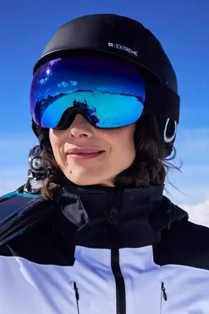

Выбор альпинистских очков

В горах ультрафиолет и отраженный свет от снега могут быстро вызвать перенапряжение глаз и ухудшение видимости. Поэтому очки для восхождения — это элемент безопасности, а не только комфорта.
Главный критерий — надежная защита от бокового света и плотная посадка без сдавливания. Оправа должна хорошо держаться при ходьбе, работе в каске и смене темпа на подъеме.
Линзы выбирают по условиям: в яркий день лучше более темная категория, в переменную облачность — умеренная. Поляризация может снизить блики, но важно проверять, как с ней читается рельеф на снегу и льду именно вам.
Запотевание часто связано не только с линзой, но и с посадкой, вентиляцией и темпом движения. Полезно иметь ткань из микрофибры и привычку регулярно очищать линзу без царапин.
Типичные ошибки: брать очки только «по внешнему виду», игнорировать совместимость с каской/капюшоном и использовать городские модели без боковой защиты. На высоте такие компромиссы быстро становятся заметными.
Перед выходом протестируйте очки в динамике: подъем, поворот головы, работа с веревкой. Если модель не требует постоянных поправок рукой, это уже хороший признак правильного выбора.